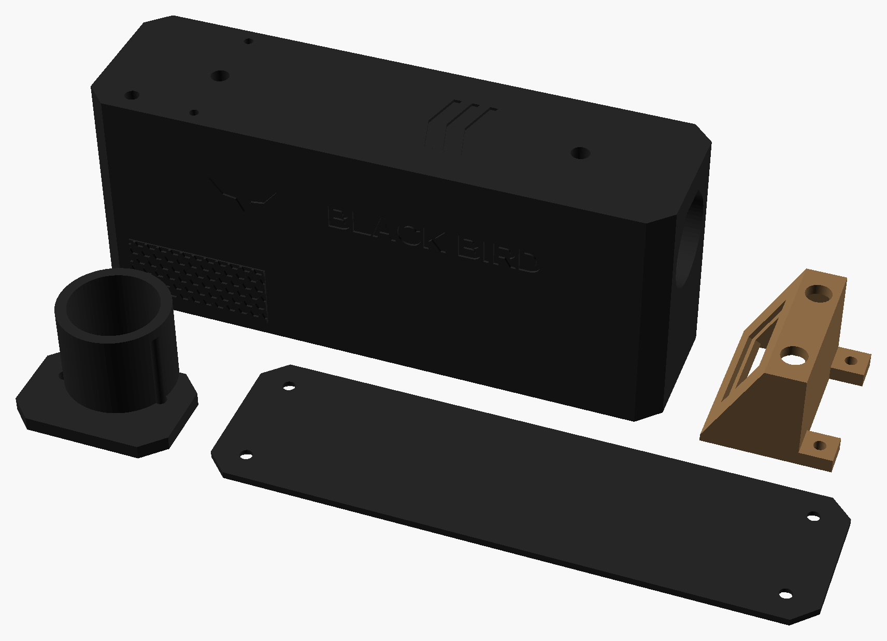

Túnel com 2 barreiras infravermelhas a 100 mm uma da outra. Mede a velocidade de cada BB e mostra m/s, fps, joules, média, desvio padrão e variação da série. Para um DMR, consistência vale mais que potência. Medidas em milímetros.
Encoste um cartão de crédito/débito na tela e mova o controle até o retângulo ter exatamente o mesmo tamanho (85,6 × 54 mm).
px/mm| Situação | Resultado |
|---|---|
| BB passa pela 1ª barreira | Interrompe o feixe infravermelho; o comparador LM393 gera um pulso e o ESP32 anota o tempo em microssegundos |
| BB passa pela 2ª barreira | Velocidade = 0,100 m ÷ tempo. Ex.: 1.060 µs = 94,3 m/s (309 fps) |
| Cada tiro | Mostra m/s, fps e joules (com o peso da BB escolhido) e atualiza a série |
| Série | Média, desvio padrão (DP), mínimo, máximo e variação (ES = máx − mín). DP abaixo de 1 m/s = DMR bem regulado |
| Botão PESO | Troca o peso da BB: 0,20 · 0,25 · 0,28 · 0,30 · 0,32 · 0,36 · 0,40 · 0,45 g |
| Segurar ZERAR 2 s | Começa uma série nova. Clique curto mostra os tiros da série um a um |
| Erro de leitura | Se só a 1ª barreira disparar (ou a velocidade sair de 30–200 m/s), mostra "ERRO" e não conta na série |
A tela fica num visor inclinado em cima da entrada do túnel, virada para quem está atirando. Assim você lê o resultado de cada disparo sem sair da posição de tiro.
O que aparece na tela do visor (OLED 0,96″ de 128 × 64 pixels). Depois de cada disparo, ela mostra a 1ª tela; o clique curto em ZERAR alterna para a estatística da série.
Todas as peças impressas deste projeto, nas cores de impressão (coyote e preto); cada peça sai de uma cor só. As tampas aparecem viradas para cima, como ficam no uso. Arquivos em 3D/stl; quantidades, suportes e configuração no 3D/LEIA-ME.txt.

| Componente | Medidas (mm) | Função |
|---|---|---|
| ESP32-C3 SuperMini (kit de 5; as outras 4 vão para o speedloader, 07, a granada, 08, e o traçante, 10) | 22,5 × 18 | Mede o tempo entre as barreiras com interrupção, em µs |
| 2 LEDs infravermelhos 940 nm + 2 fototransistores (TIL78) | Ø 5 | As 2 barreiras de luz |
| LM393 (comparador duplo) + trimpot 10 kΩ | DIP-8 | Transforma o sinal do fototransistor num pulso digital limpo; o trimpot ajusta o ponto de disparo |
| OLED 0,96″ (kit de 2; o outro vai para o scanner, 11) | 27 × 27 | Mostra os dados de cada disparo; fica no visor inclinado em cima da entrada |
| 18650 + suporte + TP4056 USB-C | Ø 18 × 65 | Bateria e carga |
| 2 botões 6×6 + chave SS12D00 | — | PESO, ZERAR, liga/desliga |
| Resistores 100 Ω (LEDs) e 10 kΩ (pull-ups) | ¼ W | Sobras do kit da bomba (01) |
| Túnel, visor da tela, tampas e adaptador de boca (impressos) | 160 × 44 × 92 | PETG preto fosco |
Sem escala. As etiquetas 3V3 e os símbolos de terra indicam o mesmo fio da placa. A energia (18650 → TP4056 → chave → 5V) é igual à do anti-cant (03).
Preços pesquisados em out/2026 no Mercado Livre e em lojas nacionais, sem frete. Só produtos novos: os links do Mercado Livre já abrem com o filtro "Novo". Peças impressas não entram. Este é o 1º projeto com ESP32-C3, então é aqui que entram os kits que os próximos projetos reaproveitam (coluna "fica para").
| Item | Onde | Fica para | Menor | Maior |
|---|---|---|---|---|
| Conjunto: kit 5 ESP32-C3 SuperMini (usa 1) | Mercado Livre | 07, 08, 10 | R$ 79,63 | R$ 97,75 |
| Conjunto: kit 2 OLED 0,96″ I2C (usa 1) | Mercado Livre | 11 (scanner) | R$ 49,90 | R$ 55,90 |
| Conjunto: kit 10 TP4056 USB-C (usa 1) | Mercado Livre | 08, 10, 14 | R$ 33,77 | R$ 47,00 |
| Conjunto: kit 100 botões 6×6 (usa 2) | Mercado Livre | 07, 11, 14 | R$ 25,84 | R$ 31,00 |
| Conjunto: kit 10 chaves SS12D00 (usa 1) | Mercado Livre | 07, 10, 14 | R$ 11,64 | R$ 12,58 |
| Conjunto: 10 LEDs IR 940 nm + 10 fototransistores (usa 2 pares) | Mercado Livre · outros | 07 (speedloader), reserva | R$ 14,98 | R$ 32,70 |
| Conjunto: kit 10 CI LM393 DIP-8 (usa 1) | Mercado Livre | 07, reserva | R$ 15,00 | R$ 21,96 |
| Conjunto: kit 2 baterias 18650 (usa 1) | Mercado Livre | 07 (speedloader) | R$ 26,00 | R$ 32,00 |
| Suporte 18650 com fios (estimativa) | Mercado Livre | — | R$ 5,00 | R$ 10,00 |
| Kit trimpots 10 kΩ (estimativa) | Mercado Livre | 07, reserva | R$ 8,00 | R$ 12,00 |
| Resistores 100 Ω e 10 kΩ | sobras do kit da bomba (01) | — | R$ 0,00 | R$ 0,00 |
| Total comprando os kits inteiros (peças impressas não entram) | ≈ R$ 270 | ≈ R$ 353 | ||
| Custo só das peças gastas neste projeto (o resto fica para os próximos) | ≈ R$ 115 | ≈ R$ 163 | ||